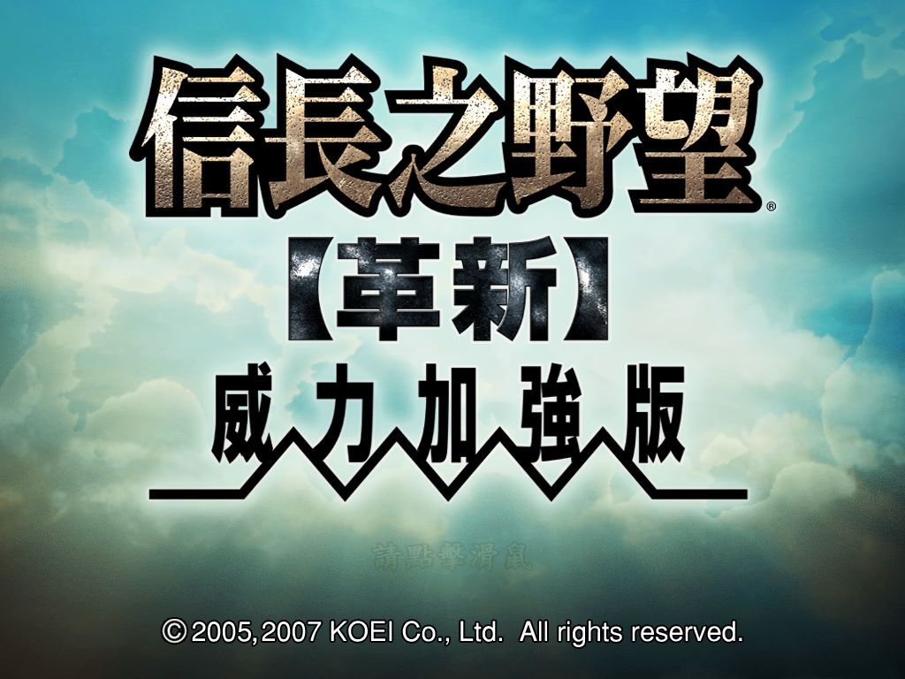
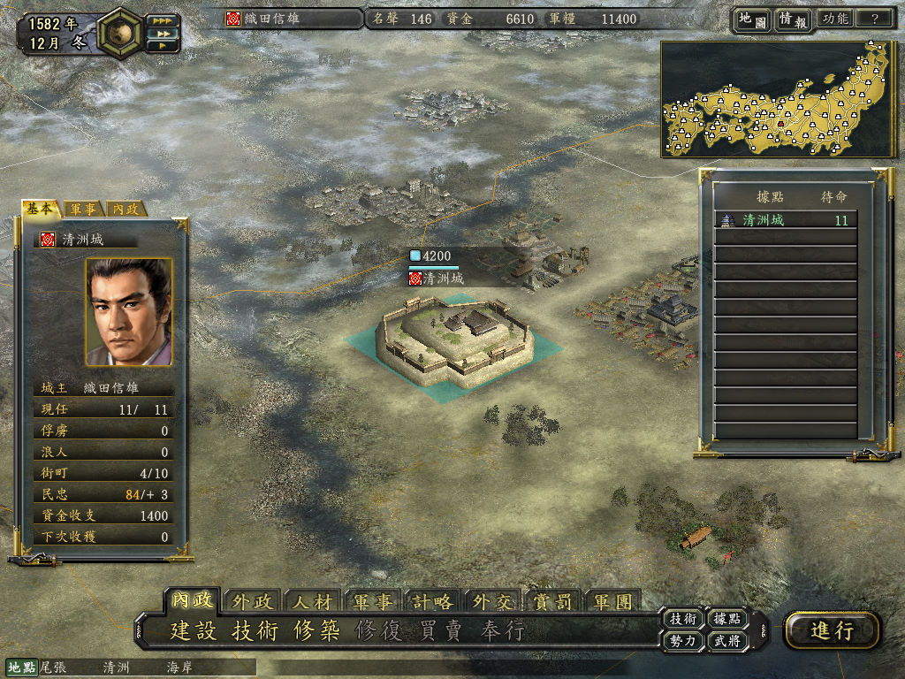

名稱：信長之野望12革新 (Nobunaga's Ambition: Innovation，中文版) 簡介：KOEI 2005年出品的策略遊戲，2007年推出威力加強版 [待補]。

保護：原始版為光碟SafeDisc 3.20，威力加強版為光碟SafeDisc 4.60 備註：原始版光碟有2005與2007兩版，後者為1.02版。 限制：由於SafeDisc保護的關係，只能在XP上執行。 備註：在VirtualBox裡執行，會無法顯示動畫（只有聲音），虛擬機也可改用VMware。 檔案：V1.01.rar = 原始版1.01更新檔 nocd_pk.rar = 威力加強版免光碟檔（仍有SafeDisc）